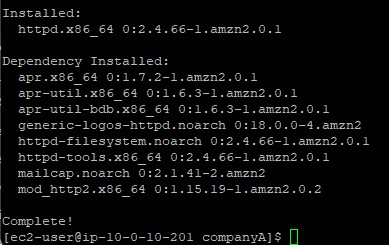
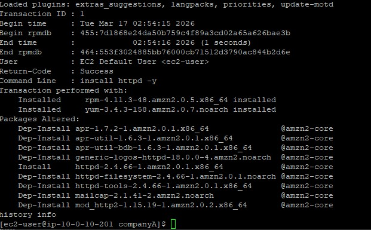
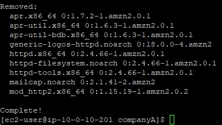
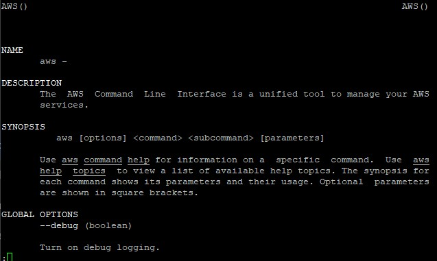
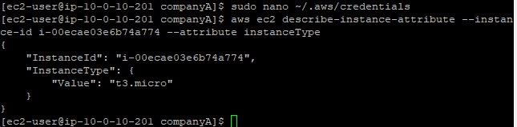

Package Updates
Executed comprehensive security upgrades and installed new software binaries using the standard package repository.
Master the yum package manager by upgrading local software, rolling back installations using the history tool, and manually configuring the AWS CLI.
Connected via PuTTY (as described in Lab 225). Invoked the yum package manager to apply critical security updates and install the HTTP daemon. Utilized history undo to roll back changes. Finally, installed the AWS CLI manually using cURL, and configured local credentials files to retrieve backend EC2 attributes.
Executed comprehensive security upgrades and installed new software binaries using the standard package repository.
Leveraged transaction IDs within yum's history log to cleanly undo a previous installation action.
Setup AWS CLI V2 via downloaded archives, configuring credentials to execute authenticated cloud queries locally.
Detailed record of each task performed during the lab.
cd companyA.sudo yum -y check-update.sudo yum update --security.sudo yum -y upgrade.sudo yum install httpd -y.
-y flag is used across yum commands to assert "yes" to all interactive prompts,
making it ideal for automated updates.
sudo yum history list,
and observed the numeric ID representing the httpd install.sudo yum history info <#>.sudo yum -y history undo <#>.

python3 --version). Detected that pip was missing.curl "https://awscli.amazonaws.com/awscli-exe-linux-x86_64.zip" -o "awscliv2.zip".unzip awscliv2.zip.sudo ./aws/install.aws help.
aws configure tool, defining us-west-2 as the default Region
and json as the default output format. Left keys blank initially.sudo nano ~/.aws/credentials.[default] profile block, saving the file.aws ec2 describe-instance-attribute --instance-id <id> --attribute instanceType.
Commands utilized during package operations.
yumThe primary package-management utility for RHEL system derivations.
update --security : Injects only critical security patches without upgrading full packageshistory list : Outputs an enumerated ledger of installed software transactionshistory undo : Safely rewinds a transaction, pruning the exact binaries appliedcurlTransfers data from internet endpoints without browser intervention.
-o : Directs the downloaded output payload directly into a specified local fileaws configureBootstraps the local environment building the ~/.aws/credentials and ~/.aws/config files.
--security updates and doing a full package upgrade.yum history undo which guarantees clean rollbacks without orphaned dependencies.AWS CLI v2 utilizing cURL and unzip instead of relying on package managers.
Operating enterprise infrastructure necessitates a flawless rollback strategy. The precision of
yum history prevents administrators from guessing which dependency packages caused
an instable update resulting in more predictable maintenance cycles.
Understanding manual shell integration via tools like cURL ensures critical infrastructural engines like the AWS CLI can be installed securely on headless servers even when standard packet managers fail.